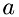

Model
Physical Model
The physical model of ReMoDy is uses the Collision_theory to describe elementary chemical reactions, and Kinetic theory to describe molecular gas dynamics. Reactions occur probabilistically during molecular collisions, with the probabilities determined by the activation energies and reaction probabilities, if more than one outcome for the reaction exists.The thermodynamic properties of the gas species include heat capacities which are used to distribute thermal energy among molecular degrees of freedom during the collisions.
Chemical Reactions
The interaction of the two molecules is modeled through the binary collision approximation whereby only two molecules can interact at a time. The interaction between the molecules can be of two kinds: (1) simple mechanical collision, (2) collision with subsequent chemical reaction. The fact of the collision is detected when the distance between the centers of two molecules becomes less than the sum of their radii, and their relative velocities are directed toward each-other.Collision is modeled in the center-of-mass (CM) frame of reference. The velocities of the two molecules are first recalculated into the CM frame. The total energy of the two molecules is first calculated as their combined internal energy plus their combined kinetic energy in the CM coordinate frame. Chemical reactions are triggered when this energy is in excess of the activation energy for the reaction. In this case the enthalpy of the reaction is added to the total energy. This energy is then redistributed between the degrees of freedom of the product molecules according to the following scheme:
where are total degrees of freedom (kinetic + internal) for molecule X=(A,B), and is the specific heat of molecule X. The function DOF(Cp) of coputing the degrees of freedom from the specific heat is defined as:
where
The combined kinetic degrees of freedom are 6, then the combined internal degrees of freedom are calculated as:
Then for each molecule the ratio of its internal degrees of freedom to the total internal degrees of freedom is computed as:
The calculations of energy redistribution between colliding molecules is done in the center-of-mass system (CM). The number of kinetic (translational) degrees of freedom of two colliding molecules in CM system ( ) will be less than that in the laboratory system, since the CM system already has 3 translational degrees of freedom associated with its center of mass. Thus, the total number of kinetic degrees of freedom in CM system will be:
) will be less than that in the laboratory system, since the CM system already has 3 translational degrees of freedom associated with its center of mass. Thus, the total number of kinetic degrees of freedom in CM system will be:
And the total number of dof in the CM system will be reduced accordingly: . The number of internal degrees of freedom in CM system remain the same as in the laboratory system: .
The procedure for calculating new velocities and internal energies in CM system during the collision of two molecules ('a' and 'b') is as follows:
- The old kinetic energy of the two molecules are computed as:
- It is combined with the old internal energy to form the new total energy in CM system as:
where iea, ieb are the internal energies of molecules  and respectively.
- The new combined energy (e) of the two molecules is calculated by adding the enthalpy of reaction (h) to the old total energy:
- Kinetic energy in the CM system is computed as the share of the new total energy distributed according to degrees of freedom:
- The new velocities of the molecules in the CM frame are then updated from the old ones. The old velocities were computed according the elastic collision scheme between two hard-balls. So, if the energy was released or absorbed during the reaction, and some of it was absorbed into the internal degrees of freedom, the old velocities should be recalculated. The kinetic-energy is redistributed equally between the two molecules:
which gives:
This is used to build the ratio of new to old velocities (see interact(...) function in domain.cc):
which are used to update the velocity vector for each molecule as:
where i=(x,y,z) is the Cartesian direction of velocity vector. The remaining internal energy, ie, is distribued among the internal degrees of freedom of each molecule X as:
It should be noted, that in the above calculations, the value of kinetic energy was that computed in CM frame of referecne. This means that he actual kinetic energy of the molecule will have a somewhat higher value that what would be expected from an equal distribution of energy among the internal and exeternal degrees of freedom. Nevertheles, this scheme is considered accurate, since the resistribution of energy is indeed taking place in the center-of-mass reference frame, and this will inevitably lead to a higher contribution of energy to kinetic degrees of freedom.
Cross-Boundary Species
The code provides the possibility of specifying cross-boundary gases, which can enter the computational domain from the other side of the open boundary (the boundary with the type="open" inside the<boundary> tag of the XML input file (see Sec.Configuration File).
The algorithm uses the density and temperature to calculate the frequency of injection of molecules of specie, at the boundary. The injection frequency, per unit area,  is computed as
is computed as
where  is the time interval at which a molecule hits the boundary area , and
is the time interval at which a molecule hits the boundary area , and  is the number of molecules in a volume with the base and length as shown in the figure:
is the number of molecules in a volume with the base and length as shown in the figure:

'
 , between the collisions can be related to the component of velocity of the molecule of species , in direction
, between the collisions can be related to the component of velocity of the molecule of species , in direction  ,
,  , as follows:
, as follows:
![\[ \Delta\,t = \frac{2\Delta\,x}{v_{sx}} \]](form_19.png)
The number of molecules, can be related to density, , as:
where is the mass of one molecule and . Thus, the frequency is:
![\[ f_s = \frac{\rho}{\mu}\Delta\,x\,A\frac{v_{sx}}{2\Delta\,x} = \frac{\rho\,v_{sx}}{2\mu}A \]](form_22.png)